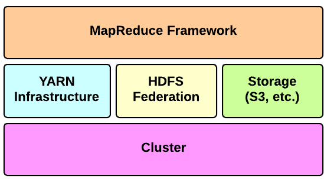
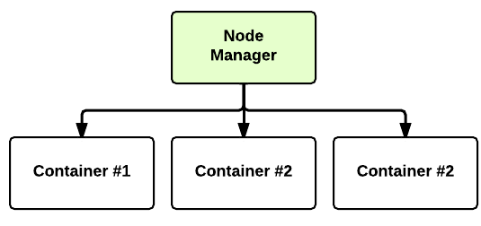
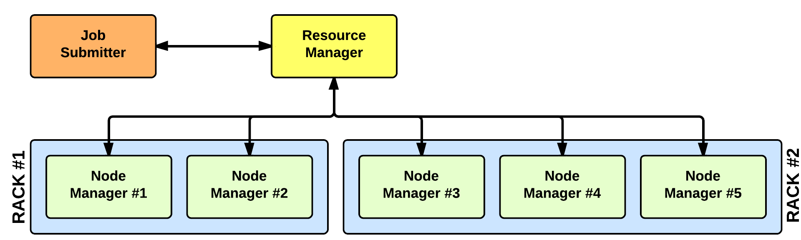

Hadoop Architecture Overview
Apache Hadoop is an open-source software framework for storage and large-scale processing of data-sets on clusters of commodity hardware. There are mainly five building blocks inside this runtime envinroment (from bottom to top):

- the cluster is the set of host machines (nodes). Nodes may be partitioned in racks. This is the hardware part of the infrastructure.
the YARN Infrastructure (Yet Another Resource Negotiator) is the framework responsible for providing the computational resources (e.g., CPUs, memory, etc.) needed for application executions. Two important elements are:
the Resource Manager (one per cluster) is the master. It knows where the slaves are located (Rack Awareness) and how many resources they have. It runs several services, the most important is the Resource Scheduler which decides how to assign the resources.

the Node Manager (many per cluster) is the slave of the infrastructure. When it starts, it announces himself to the Resource Manager. Periodically, it sends an heartbeat to the Resource Manager. Each Node Manager offers some resources to the cluster. Its resource capacity is the amount of memory and the number of vcores. At run-time, the Resource Scheduler will decide how to use this capacity: a Container is a fraction of the NM capacity and it is used by the client for running a program. 
the HDFS Federation is the framework responsible for providing permanent, reliable and distributed storage. This is typically used for storing inputs and output (but not intermediate ones).
- other alternative storage solutions. For instance, Amazon uses the Simple Storage Service (S3).
- the MapReduce Framework is the software layer implementing the MapReduce paradigm.
The YARN infrastructure and the HDFS federation are completely decoupled and independent: the first one provides resources for running an application while the second one provides storage. The MapReduce framework is only one of many possible framework which runs on top of YARN (although currently is the only one implemented).
YARN: Application Startup

In YARN, there are at least three actors:
- the Job Submitter (the client)
- the Resource Manager (the master)
- the Node Manager (the slave)
The application startup process is the following:
- a client submits an application to the Resource Manager
- the Resource Manager allocates a container
- the Resource Manager contacts the related Node Manager
- the Node Manager launches the container
- the Container executes the Application Master

The Application Master is responsible for the execution of a single application. It asks for containers to the Resource Scheduler (Resource Manager) and executes specific programs (e.g., the main of a Java class) on the obtained containers. The Application Master knows the application logic and thus it is framework-specific. The MapReduce framework provides its own implementation of an Application Master.
The Resource Manager is a single point of failure in YARN. Using Application Masters, YARN is spreading over the cluster the metadata related to running applications. This reduces the load of the Resource Manager and makes it fast recoverable.